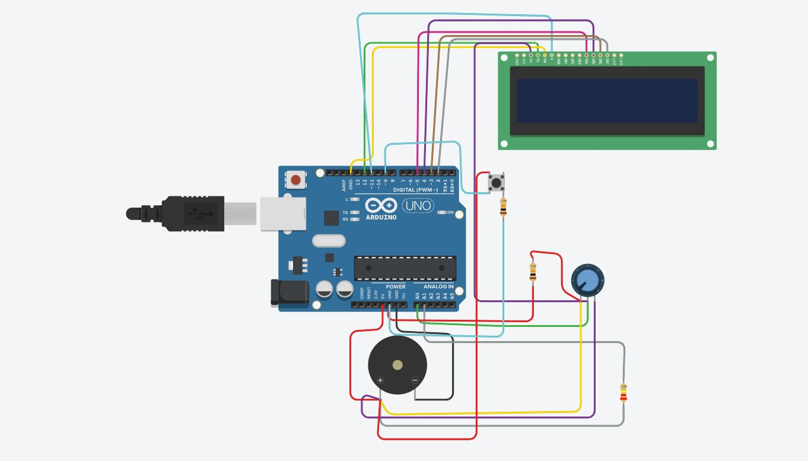

Integrantes e Professor Orientador
- Matheus Sousa — RA: 202407129
- Pedro Henrique — RA: 202524458
- Luis Henrique — RA: 202415008
- Lucas Souza — RA: 202529840
Professor Orientador: Geraldo Peres Caixeta
Resumo do Projeto
Este projeto é uma simulação lúdica de um jogo de sorte usando Arduino e um display LCD 16x2, inspirado em cassinos. O usuário pode pressionar botões para “apostar” e “girar” as roletas, que são exibidas no LCD com cores simulando os resultados de uma slot machine.
O sistema é interativo e educativo, permitindo compreender conceitos de controle de exibição em LCD, leitura de botões, aleatoriedade e lógica de programação. Além disso, o uso de sons e exibição de créditos e apostas torna a experiência envolvente e divertida.
Descrição Detalhada do Projeto
O projeto foi desenvolvido como uma simulação interativa de um jogo de sorte controlado por Arduino, display LCD 16x2, buzzer e dois botões. A proposta é permitir que o jogador interaja com um sistema de roletas digitais, visualizando resultados e créditos em tempo real.
O objetivo é demonstrar, de forma prática, o uso de componentes eletrônicos básicos, leitura de entradas digitais e saída de dados em LCD. O sistema também introduz conceitos de lógica condicional, funções, estruturas de repetição e exibição dinâmica.
Componentes Utilizados:
- 1x Arduino Uno R3
- 1x LCD 16x2 (Character LCD)
- 1x Potenciômetro 10kΩ
- 2x Botão (Pushbutton)
- 1x Buzzer (Piezo Speaker)
- 2x Resistores 10kΩ
- 1x Resistor 220Ω
- 1x Protoboard
Imagem do Protótipo:
Montagem Passo a Passo
Etapas Iniciais
1. Posicione o LCD 16x2 na parte superior da protoboard.
2. Conecte o potenciômetro à direita do LCD.
3. Posicione os botões SPIN e BET na parte inferior.
4. Conecte o buzzer próximo ao Arduino.
5. Adicione os resistores de 10kΩ e 220Ω conforme necessário.
Conexões do LCD
[1] VSS → GND
[2] VDD → 5V
[3] VO → Pino central do potenciômetro
[4] RS → Pino 12
[5] RW → GND
[6] E → Pino 11
[11] D4 → Pino 5
[12] D5 → Pino 4
[13] D6 → Pino 3
[14] D7 → Pino 2
[15] A → 5V via resistor 220Ω
[16] K → GND
Botões e Buzzer
Botão SPIN:
Terminal superior esquerdo → 5V
Terminal inferior esquerdo → Pino 8 + resistor 10kΩ → GND
Botão BET:
Terminal superior esquerdo → 5V
Terminal inferior esquerdo → Pino 9 + resistor 10kΩ → GND
Buzzer:
Terminal positivo (+) → Pino 6
Terminal negativo (-) → GND
Alimentação
Arduino 5V → Barramento 5V da protoboard
Arduino GND → Barramento GND da protoboard
Código do Projeto
#includeLiquidCrystal lcd(12, 11, 5, 4, 3, 2); #define SPIN_BTN 8 #define BET_BTN 9 #define BUZZER 6 int credits = 100; int betOptions[] = {1, 2, 5}; int betIndex = 0; int bet = betOptions[0]; const char* colors[] = {"VERMELHO", "AZUL", "VERDE", "AMARELO", "ROXO", "BRANCO"}; const int numColors = 6; int reel[3] = {0, 0, 0}; bool lastSpinState = HIGH; bool lastBetState = HIGH; void setup() { lcd.begin(16, 2); pinMode(SPIN_BTN, INPUT_PULLUP); pinMode(BET_BTN, INPUT_PULLUP); pinMode(BUZZER, OUTPUT); randomSeed(analogRead(A0)); lcd.print("Cassino Interativo"); delay(1000); showScreen(); } void loop() { bool currentSpinState = digitalRead(SPIN_BTN); bool currentBetState = digitalRead(BET_BTN); if (lastSpinState == HIGH && currentSpinState == LOW) { delay(50); spin(); } lastSpinState = currentSpinState; if (lastBetState == HIGH && currentBetState == LOW) { delay(50); betIndex = (betIndex + 1) % 3; bet = betOptions[betIndex]; showScreen(); tone(BUZZER, 500, 100); } lastBetState = currentBetState; }
Teste Final
- LCD exibe o texto corretamente;
- Botão BET muda o valor da aposta;
- Botão SPIN inicia a animação das roletas;
- Buzzer toca sons conforme o resultado;
- Créditos aumentam ou diminuem conforme o jogo.